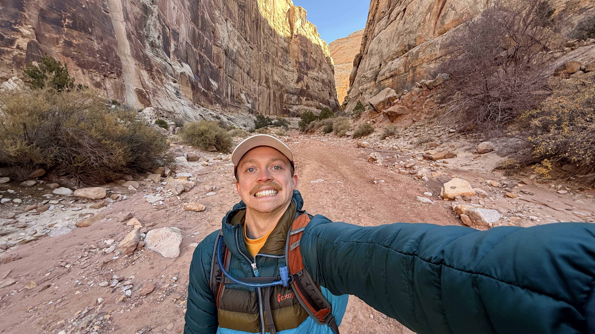

Grant Long is a Tectonic Geomorphologist with interests in the dynamics of collisional margins and the role in shaping landscapes over geologic timescales. His primary research interests lie at the intersection of climate and tectonics, where he explores how these forces drive change in Earth's topography. His research approach is highly field-oriented, involving intensive field seasons to gather samples. He is also passionate about the outdoors participating in skiing, climbing, hiking, biking, and anything to get outside.
Currently a PhD student at Stanford University.
Contact: glong1@stanford.edu (he/him)